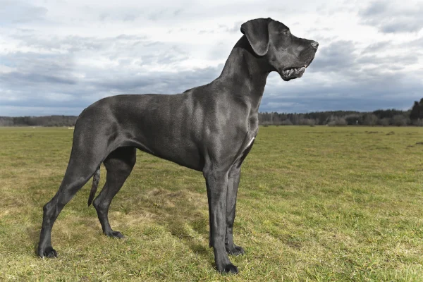

HIGIENE

Por ser um cachorro ativo, o Dogue Alemão precisa de cuidados importantes com a higiene. O banhos precisam ser dados regularmente, mesmo que possam ser uma tarefa um tanto difícil, tanto pelo tamanho do animal, como pelo comportamento, que mesmo quando adulto, ainda carrega traços infantis.
O uso de produtos adequados é uma precaução fundamental. Shampoos, condicionadores e outros cosméticos apropriados para a pelagem e pele fazem toda a diferença. Além de deixarem o pet mais limpinho e cheiroso, fazem bem à saúde dos pelinhos.